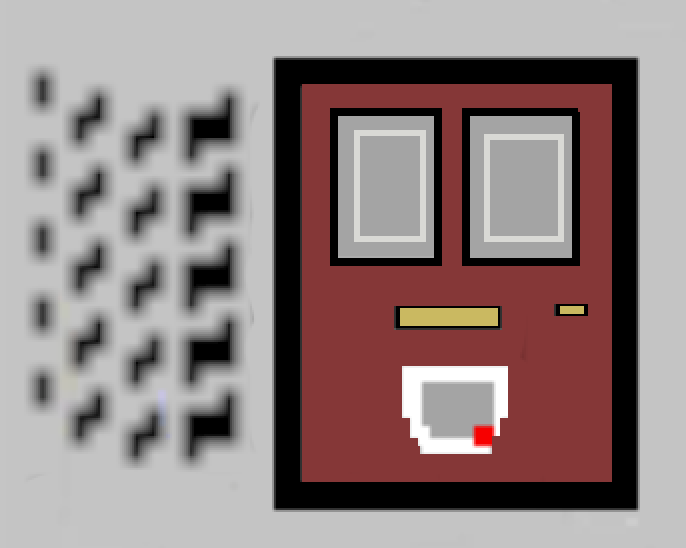

Python



Home


This is a Calculator script that performs some basic and some more advanced mathematical functions.
This project helped me learn more about functions within Python, how to properly define them, and then how to create a display which could take user input.
Drawing on what I learned from the first Calculator, I decided to design a Physics Calculator, scripted in Python and running in Terminal.
It started off with only a few functions, but with the help of Physics.info, I had a go at completing some more advanced formulae.
Using the Calculator script as a base, I decided to make a more interesting GUI.
To do this, I started researching TkInter, which I really enjoyed as it felt like a middlepoint between between Python and CSS in some ways.
I have made a start on doing the same with my Physics Calculator, but haven't copied in all of the functions yet, so while it is functional, it is not yet complete.
After using TkInter in my calculator, I felt I had enough experience to try creating a quiz in the style of a Pub Quiz machine (hence the egregiously tacky font...)
Building on one of our tasks during the Python section of the JustIT course, I decided to take the Python Quiz and add a few extra layers.
This included a GUI to make it look more presentable, and an external dictionary function from which to load the questions and answers.
I then used Pyinstaller to package the contents into both Mac and Windows friendly versions, so they could be opened like an app.

This is the start of a MIDI Generator. The idea is that by pre-programming notes to keys,
I should be able to generate a selection of those notes and export it as a .mid file (using mido) which can then be imported into music production software.
Eventually, it would be a stretch goal to create Generators specific to certain instruments, so that (in theory) I could write a song at the click of a button... or a few.